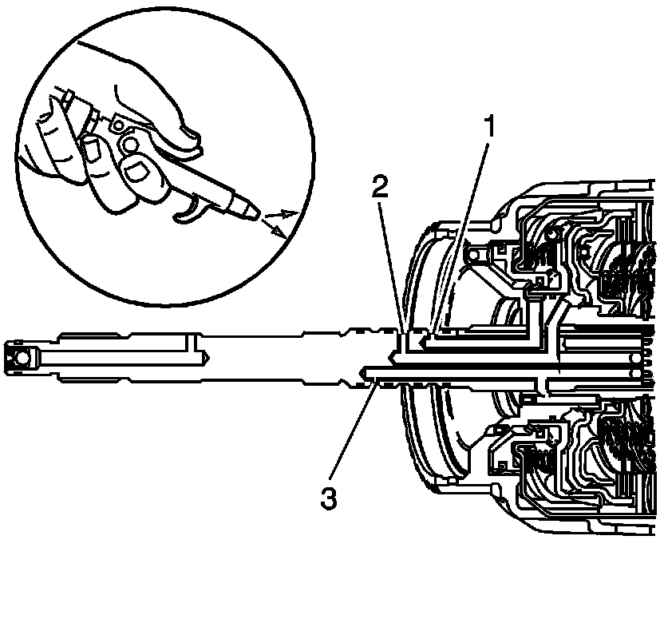

Clutch Air Check
Clutch Air Check
Inspection Procedure
Important: When the overrun clutch is checked, the air will blow by the forward clutch piston lip seals and exit out of the forward clutch feed hole in the turbine shaft.

Apply air into the feed holes in the turbine shaft in order to check the following items:
^ The 3rd and 4th clutch (1)
^ The forward clutch (2)
^ The overrun clutch (3)